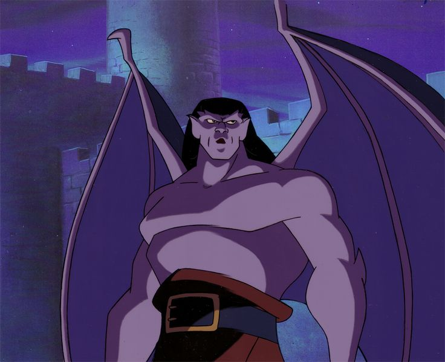

🏰 Gargoyles
"Gündüzleri taş, geceleri savaşçı..." New York'un koruyucularını tanıyor musun?
1. Gargoyle’lar güneş doğduğunda neye dönüşürler?
2. Gargoyle’ların lideri olan, mor tenli karakterin adı nedir?
3. Gargoyle’lar ne zaman aktif hale gelir?

4. Gargoyle’lar modern zamanda hangi şehri korumaktadır?
5. Xanatos kaleyi neden gökdeleninin tepesine taşıtmıştır?
6. Gargoyle’ların en yakın insan dostu olan polisin adı nedir?
7. Goliath’ın eski aşkı olan ama düşmana dönüşen dişi gargoyle kimdir?
8. Grubun en yaşlı, bilge ve bir gözü yaralı üyesi kimdir?
9. Lexington’ın gruptaki rolü nedir?
10. Grubun maskotu olan, köpeğe benzeyen gargoyle’un adı nedir?
11. Broadway’in en sevdiği şeyler nelerdir?
12. Brooklyn’in karakteri nasıldır?
13. Xanatos’un asistanı ve daha sonra eşi olan kadın kimdir?
14. Xanatos neden gargoyle şeklinde robotik bir zırh giyer?